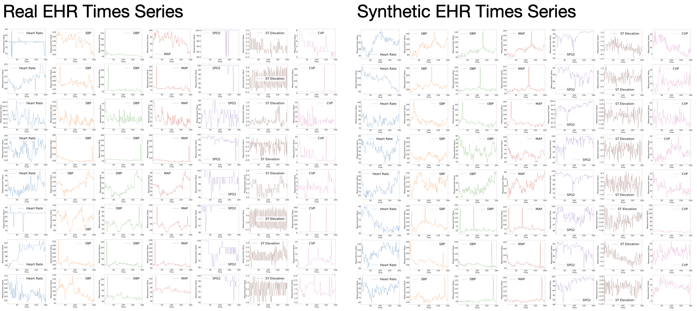
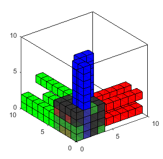
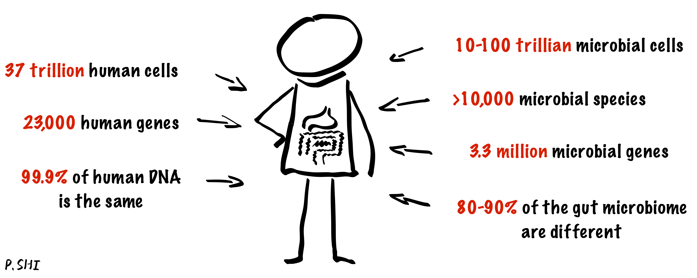
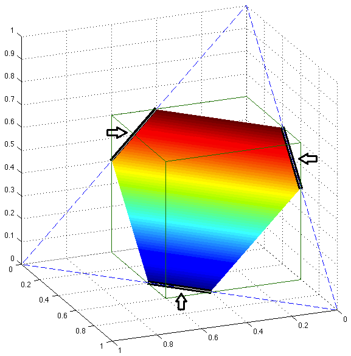
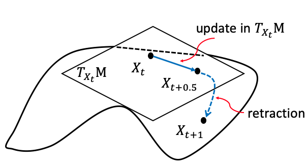
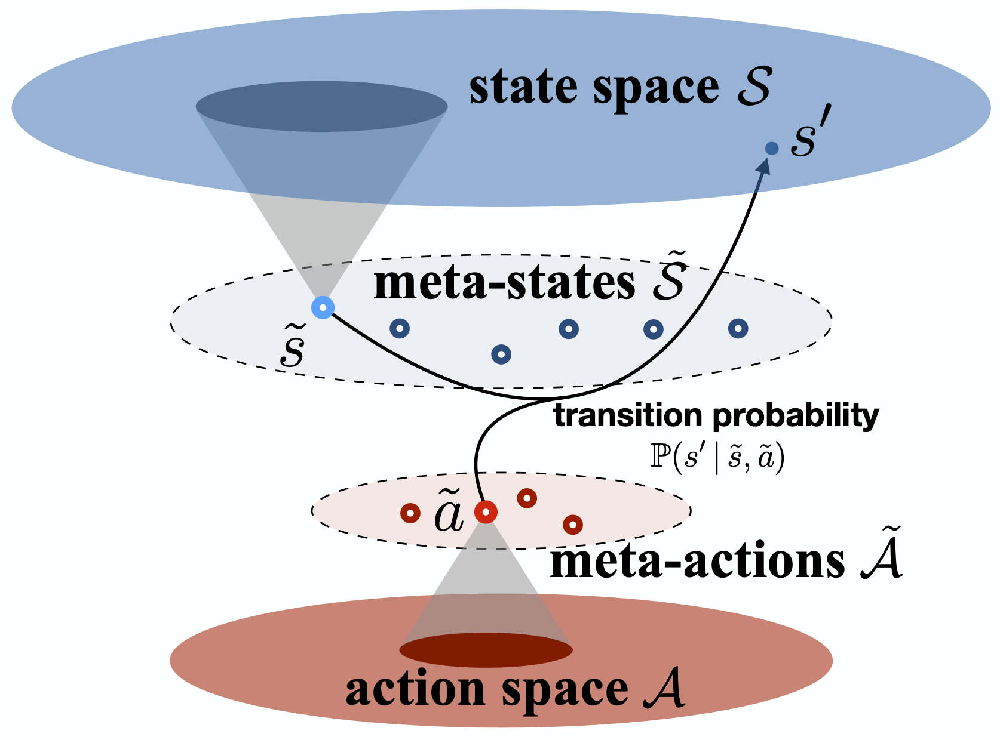
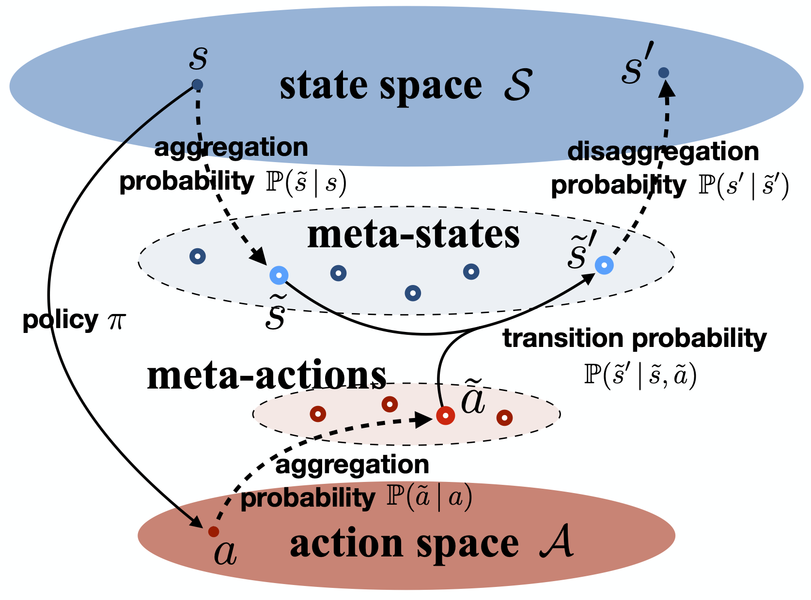
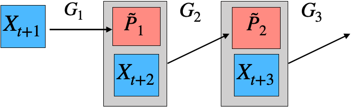
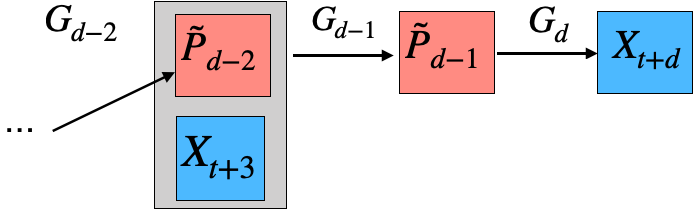
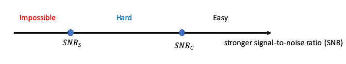

Click on each tab below for a description and representative papers on each topic. See the "Publications" page for a complete list of papers.
Health Informatics
Electronic Health Records (EHR) play a critical role in modern healthcare, providing comprehensive digital records of patient histories, treatments, and outcomes. Our team leverages EHR data to do innovative research. We are currently focusing on several key areas, including: (1) phenotyping, where we identify and classify patient subgroups based on shared characteristics to better understand disease patterns; (2) timeline registration, which involves aligning and integrating medical events across different timelines to create a cohesive patient history; and (3) the development of synthetic EHR data. We collaborate with medical researchers on several syndromes, such as sepsis and acute kidney disease, aiming to enhance our ability to simulate, analyze, and predict outcomes in these critical health areas.

Representative papers:
- Jianbin Tan, Yan Zhang, Chuan Hong, T. Tony Cai, Tianxi Cai, and Anru R. Zhang (2025+). Integrated Analysis for Electronic Health Records with Structured and Sporadic Missingness, Journal of Biomedical Informatics.
- Xin Gai, Shiyi Jiang, and Anru R. Zhang (2025+). Subtype-aware registration of longitudinal electronic health records.
- Muhang Tian, Bernie Chen, Allan Guo, Shiyi Jiang, and Anru R. Zhang (2024+). Fast and reliable generation of EHR time series via diffusion models, Journal of the American Medical Informatics Association.
- Zihan Zhu, Xin Gai, and Anru R. Zhang (2024+). Functional post-clustering selective inference with applications to EHR.
- Shiyi Jiang, Xin Gai, Miriam Treggiari, William Stead, Yuankang Zhao, David Page, and Anru R. Zhang (2024). Soft phenotyping for sepsis via EHR time-aware soft clustering, Journal of Biomedical Informatics, 152, 104615.
- Shiyi Jiang, Rungang Han, Krishnendu Chakrabarty, David Page, William Stead, and Anru R. Zhang (2023). Timeline registration for electronic health records, AMIA Summits on Translational Science Proceedings, 291–299.
(This paper won the Data Science Distinguished Paper Award from 2023 AMIA Informatics Summit. Only one paper receives this award.)
Generative Models
Generative models are a class of machine learning models that aim to understand and model the underlying distribution of data, allowing researchers to generate synthetic data that resemble those in the original dataset. These models have broad applications in biomedical data analysis, where generating realistic data is crucial for tasks like simulation, privacy preservation, and data augmentation.
Representative papers:
- Jianbin Tan and Anru R. Zhang (2025+). Smooth flow matching.
- Pengfei Lyu, Zhengchi Ma, Linjun Zhang, and Anru R. Zhang (2025+). Bias-corrected data synthesis for imbalanced learning.
- Yufa Zhou, Yixiao Wang, Surbhi Goel, and Anru R. Zhang (2025+). Why Do Transformers Fail to Forecast Time Series In-Context?, What Can('t) Transformers Do? @ NeurIPS 2025, accepted as an oral presentation (3/68).
- Yufa Zhou, Yixiao Wang, Xunjian Yin, Shuyan Zhou, and Anru R. Zhang (2025+). The Geometry of Reasoning: Flowing Logics in Representation Space.
- Muhang Tian, Bernie Chen, Allan Guo, Shiyi Jiang, and Anru R. Zhang (2024+). Fast and reliable generation of EHR time series via diffusion models, Journal of the American Medical Informatics Association.
- Sitan Chen, Sinho Chewi, Jerry Li, Yuanzhi Li, Adil Salim, and Anru R. Zhang (2023). Sampling is as easy as learning the score: Theory for diffusion models with minimal data assumptions, International Conference on Learning Representations (ICLR), accept: notable-top-5%.
- Sitan Chen, Jerry Li, Yuanzhi Li, and Anru R. Zhang (2023). Learning polynomial transformations, 2023 Annual ACM Symposium on Theory of Computing (STOC).
Tensor Data Analysis
Our group focuses on the analysis of high-dimensional tensors, which commonly arise in fields like neuroimaging, microbiology, bioinformatics, and material science. Traditional statistical methods often fall short when applied to these complex data structures, leading to computational challenges and sub-optimal results. We have developed statistically optimal, computationally efficient methods with strong theoretical guarantees for tensor problems, including completion, regression, SVD/PCA, and clustering. These methods have been successfully applied to microscopy imaging, neuroimaging, genomics data, and more.
Representative papers:
- Anru Zhang (2019). Cross: Efficient low-rank tensor completion, The Annals of Statistics, 47, 936–964. [R package]
- Anru Zhang and Dong Xia (2018). Tensor SVD: Statistical and computational limits, IEEE Transactions on Information Theory, 64, 1–28. [An R implementation]
- Anru Zhang and Rungang Han (2019). Optimal sparse singular value decomposition for high-dimensional high-order data, Journal of the American Statistical Association, 114, 1708–1725. [R package]
- Anru R. Zhang, Yuetian Luo, Garvesh Raskutti, and Ming Yuan (2020). ISLET: fast and optimal low-rank tensor regression via importance sketchings, SIAM Journal on Mathematics of Data Science, 2, 444–479. [R package]
- Rungang Han, Rebecca Willett, and Anru R. Zhang (2022). An optimal statistical and computational framework for generalized tensor estimation, The Annals of Statistics, 50, 1–29.
- Rungang Han, Yuetian Luo, Miaoyan Wang, and Anru R. Zhang (2023). Exact clustering in tensor block model: Statistical optimality and computational limit, Journal of the Royal Statistical Society, Series B, 84, 1666–1698. [R Package]
(This paper received the Student's Paper Award from the Statistical Learning and Data Science Section of the American Statistical Association, 2021) - Runshi Tang, Ming Yuan, and Anru R. Zhang (2024+). Mode-wise principal subspace pursuit and matrix spiked covariance model, Journal of the Royal Statistical Society, Series B, to appear.
Microbiome Data Analysis
The human microbiome is the totality of all microorganisms in and on the human body. These microbes play a significant role in human metabolism and energy generation and are crucial to human health. Our group's research focuses on analyzing the human microbiome and addresses the challenges of analyzing compositional data.
Representative papers:
- Rungang Han, Pixu Shi, and Anru R. Zhang (2024). Guaranteed functional tensor singular value decomposition, Journal of the American Statistical Association, 119, 995–1007.
- Pixu Shi, Cameron Martino, Rungang Han, Stefan Janssen, Gregory Buck, Myrna Serrano, Kouros Owzar, Rob Knight, Liat Shenhav, and Anru R. Zhang (2024+). Time-informed dimensionality reduction for longitudinal microbiome studies.
- Pixu Shi, Yuchen Zhou, and Anru R. Zhang (2022). High-dimensional log-error-in-variable regression with applications to microbial compositional data analysis, Biometrika, 109, 405–420.
- Zachary M. Burcham, Aeriel D. Belk, Bridget B. McGivern, Amina Bouslimani, Parsa Ghadermazi, Cameron Martino, Liat Shenhav, Anru R. Zhang, et al. (2024). Universal interkingdom microbial network decomposes mammals despite varied climate, location, and seasonal influence, Nature Microbiology, 9, 595–613.
- Pixu Shi, Anru Zhang, and Hongzhe Li (2016). Regression analysis for microbiome compositional data, The Annals of Applied Statistics, 10, 1019–1040. [Matlab package]
High-dimensional Statistics
High-dimensional statistics focuses on the statistical inference of data where the number of variables (dimensions) is comparable to or greater than the number of observations. Traditional low-dimensional methods often fail in such settings due to challenges like overfitting, multicollinearity, and computational complexity. Our group has been working on various problems in this field, including specific topics such as compressed sensing, sparse linear regression, low-rank matrix recovery, and their applications.
Representative papers:
- Peter Hoff, Andrew McCormack, and Anru R. Zhang (2023). Core shrinkage covariance estimation for matrix-variate data, Journal of the Royal Statistical Society, Series B, 85, 1659–1679.
- Tony Cai and Anru Zhang (2018). Rate-optimal perturbation bounds for singular subspaces with applications to high-dimensional statistics, The Annals of Statistics, 46, 60–89.
- Tianxi Cai, Tony Cai, and Anru Zhang (2016). Structured matrix completion with applications in genomic data integration, Journal of the American Statistical Association, 111, 621–633. [R package]
- Tony Cai and Anru Zhang (2015). ROP: matrix recovery via rank-one projections, The Annals of Statistics, 43, 102–138.
- Tony Cai and Anru Zhang (2014). Sparse representation of a polytope and recovery of sparse signals and low-rank matrices, IEEE Transactions on Information Theory, 60, 122–132.
Non-convex/Riemannian Optimization
Riemannian optimization is a framework for solving optimization problems on smooth manifolds, where traditional methods in Euclidean spaces are not directly applicable. By leveraging the geometric structure of the manifold, Riemannian optimization enables more accurate and efficient optimization on curved spaces. Our group has been utilizing and developing Riemannian optimization theory and methods to tackle complex, high-dimensional problems.
Representative papers:
- Yuetian Luo and Anru R. Zhang (2024+). Tensor-on-tensor regression: Riemannian optimization, over-parameterization, statistical-computational gap, and their interplay, The Annals of Statistics, to appear. [R Package]
- Yuetian Luo, Xudong Li, and Anru R. Zhang (2024+). Nonconvex factorization and manifold formulations are almost equivalent in low-rank matrix optimization, INFORMS Journal on Optimization, to appear.
- Yuetian Luo, Xudong Li, and Anru R. Zhang (2024). On geometric connections of embedded and quotient geometries in Riemannian fixed-rank matrix optimization, Mathematics of Operations Research, 49, 782–825.
- Yuetian Luo, Xudong Li, Wen Huang, and Anru R. Zhang (2024). Recursive importance sketching for rank constrained least squares, Operations Research, 72, 237–256.
- Yuetian Luo and Anru R. Zhang (2023). Low-rank tensor estimation via Riemannian Gauss-Newton: Statistical optimality and second-order convergence, Journal of Machine Learning Research, 24, 1–48.
- Ziwei Zhu, Xudong Li, Mengdi Wang, and Anru Zhang (2022). Learning Markov models via low-rank optimization, Operations Research, 70, 2384–2398.
Markov (Decision) Processes
Our research focuses on model reduction of Markov processes, a crucial problem in high-dimensional state-transition systems and reinforcement learning. We develop methods for estimating and aggregating states in discrete-time Markov processes using empirical trajectories, with a focus on key properties such as representability, aggregatability, and lumpability. We also study the tensor structure of the transition kernel in continuous-state-action Markov decision processes, proposing a tensor-inspired unsupervised learning method to identify low-dimensional state and action representations.
  
Representative papers:
- Chengzhuo Ni, Yaqi Duan, Munther Dahleh, Mengdi Wang, and Anru R. Zhang (2023). Learning good state and action representations for Markov decision process via tensor decomposition, Journal of Machine Learning Research, 24, 1–53.
A short version was presented at International Symposium on Information Theory (ISIT), 2021. - Yuchen Zhou, Lili Zheng, Yazhen Wang, and Anru R. Zhang (2022). Optimal high-order tensor SVD via tensor-train orthogonal iteration, IEEE Transactions on Information Theory, 66, 5927–5964. [R Package]
- Ziwei Zhu, Xudong Li, Mengdi Wang, and Anru Zhang (2022). Learning Markov models via low-rank optimization, Operations Research, 70, 2384–2398.
- Anru Zhang and Mengdi Wang (2020). Spectral state compression of Markov processes, IEEE Transactions on Information Theory, 66, 3202–3231.
- Mengdi Wang, Xudong Li, and Anru Zhang (2018). Estimation of Markov chain via rank-constrained likelihood, International Conference on Machine Learning (ICML), PMLR 80:3033–3042.
Network Analysis
Network analysis is a method used to study the relationships and interactions within a network. It is widely applied in fields such as social network analysis and gene interaction studies. Our group's research spans various projects involving tensor networks and multi-layer networks.
Representative papers:
- Joshua Agterberg and Anru R. Zhang (2024+). Estimating higher-order mixed memberships via the l_{2,\infty} tensor perturbation bound.
- Jing Lei, Anru R. Zhang, and Zihan Zhu (2024+). Computational and statistical thresholds in multi-layer stochastic block models, The Annals of Statistics, to appear.
- Jiashun Jin, Tracy Ke, Paxton Turner, and Anru R. Zhang (2023). Phase transition for detecting a small community in a large network, 2023 International Conference on Learning Representations (ICLR), accepted.
Computational Complexity of Statistical Inference
Traditional statistical inference has focused on determining fundamental statistical limits and developing algorithms to achieve them. However, a key challenge arises when statistically optimal estimators are computationally infeasible, while efficient algorithms often fall short of these theoretical limits, requiring more data or higher signal strength. This disconnect suggests that the true benchmark in modern high-dimensional settings is the statistical limit achievable by computationally efficient algorithms. Our team has investigated several topics related to the computational complexity of statistical inference, particularly for problems arising from tensor and network data.
Representative papers:
- Jing Lei, Anru R. Zhang, and Zihan Zhu (2024+). Computational and statistical thresholds in multi-layer stochastic block models, The Annals of Statistics, to appear.
- Ilias Diakonikolas, Daniel Kane, Yuetian Luo, and Anru R. Zhang (2023). Statistical and computational limits for tensor-on-tensor association detection, Proceedings of the Thirty-Sixth Conference on Learning Theory (COLT), 195, 5260–5310.
- Yuetian Luo and Anru R. Zhang (2022). Tensor clustering with planted structures: Statistical optimality and computational limits, The Annals of Statistics, 50, 584–613.
- Jiashun Jin, Tracy Ke, Paxton Turner, and Anru R. Zhang (2023). Phase transition for detecting a small community in a large network, 2023 International Conference on Learning Representations (ICLR), accepted.
- Yuetian Luo and Anru R. Zhang (2020). Open problem: Average-case hardness of hypergraphic planted clique detection, Conference on Learning Theory (COLT), 125, 3852–3856. [talk and slides]
- Anru Zhang and Dong Xia (2018). Tensor SVD: Statistical and computational limits, IEEE Transactions on Information Theory, 64, 1–28. [An R implementation]
Collaborative Research
Collaborative research is essential in advancing scientific knowledge across disciplines. I served in the BERD (Biostatistics, Epidemiology, and Research Design) Core at Duke Biostatistics & Bioinformatics from 2020 to 2023, collaborating on various projects with the Departments of Neurosurgery, Radiology, and Psychiatry & Behavioral Sciences at Duke School of Medicine. Additionally, I have worked on several projects involving scientific topics outside the School of Medicine.
Representative papers:
- Chenyin Gao, Shu Yang, and Anru R. Zhang (2024). Self-supervised imaging denoising via low-rank tensor approximated convolutional neural network, IET Image Processing, to appear.
- Annalise Schweickart, Richa Batra, Bryan J. Neth, Cameron Martino, Liat Shenhav, Anru R. Zhang, et al. (2024). Serum and CSF metabolomics analysis shows Mediterranean Ketogenic Diet mitigates risk factors of Alzheimer's disease, npj Metabolic Health and Disease, 2, 15.
- Zachary M. Burcham, Aeriel D. Belk, Bridget B. McGivern, Amina Bouslimani, Parsa Ghadermazi, Cameron Martino, Liat Shenhav, Anru R. Zhang, et al. (2024). Universal interkingdom microbial network decomposes mammals despite varied climate, location, and seasonal influence, Nature Microbiology, 9, 595–613.
- Anru R. Zhang, Ryan Bell, Chen An, Runshi Tang, Shana Hall, Cliburn Chan, Kareem Al-Khalil, and Christina Meade (2023). Cocaine use prediction with tensor-based machine learning on multimodal MRI connectome data, Neural Computation, 36, 107–127.
- Aditi U. Gurkar, Akos A. Gerencser, Ana L. Mora, Andrew C. Nelson, Anru R. Zhang, et al. Spatial mapping of cellular senescence: emerging challenges and opportunities, Nature Aging, 3, 776–790, 2023.
- Sheri Towe, Runshi Tang, Matt Gibson, Anru R. Zhang, and Christina Meade. Longitudinal changes in neurocognitive performance related to drug use intensity in a sample of persons with and without HIV who use stimulants, Drug and Alcohol Dependence, to appear.
- Christine Park, Beiyu Liu, Stephen C. Harward, Anru R. Zhang, et al. Ventriculomegaly and postoperative intraventricular blood predict cerebrospinal fluid diversion following posterior fossa tumor resection, Journal of Neurosurgery: Pediatrics, 28, 533–543, 2021.
- Chenyu Zhang, Rungang Han, Anru Zhang, and Paul Voyles. Denoising Atomic Resolution 4D Scanning Transmission Electron Microscopy Data with Tensor Singular Value Decomposition, Ultramicroscopy, 219, 113123, 2020.
Our research is supported in part by the NSF CAREER Grant 2203741 (sole PI) and NIH Grants R01HL169347 (sole PI) and R01HL168940 (multi-PI).